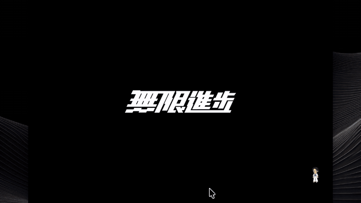

会话工作区
按项目工作目录（CWD）自动组织历史会话树，多项目并发开发时上下文浏览、切换、恢复更直观扁平。
Pi Agent Desktop 用 Electron 把 Pi coding agent 装进一个纯净的原生窗口，整合会话工作区、双轨分支、长期记忆与 MCP / Skill 管理，让大模型写代码这件事，第一次变得井井有条。

实时对话 · SSE 流式 · 运行中 Follow-up 队列独立 Electron 窗口、系统托盘、最小化驻留、GitHub Releases 自动更新检查，随时唤醒进入编码状态。
会话、分支、编辑器与工具链同屏流转，Apple 风格紧凑布局与液态思考球，让智能体的每一步都有迹可循。
物理 Fork 与会话内分支双轨并行，从任意节点回退继续、克隆到新目录，完美契合 AI 多样化探索。
Capabilities
从会话管理到记忆、扩展与原生体验，二十余项能力按四条主线组织，覆盖你与 Pi 智能体协作的每个环节。
按项目工作目录（CWD）自动组织历史会话树，多项目并发开发时上下文浏览、切换、恢复更直观扁平。
物理 Fork（创建独立 .jsonl）与会话内分支（navigate_tree 回退历史节点继续），两套机制各得其所。
可视化切换同一会话内的各条分支，配合会话内回退，随时对比不同试错路径的结果。
从任意节点 Branch / Clone 会话到新目录；一键导出为 HTML 或 Markdown，方便分享与归档。
Plan / Ask / Full 三种安全模式，Ask 模式对工具调用拦截确认，模式持久化到会话可重载恢复。
Project Trust 409 握手与授权弹窗，首次进入项目时明确边界，避免误操作陌生工作区。
原生弹窗支持扩展的 confirm / select / input / editor / notify 交互，扩展体验不再局限于终端。
集中控制智能体可用的工具；对话中途随时切换模型，按任务选择最合适的大脑。
项目级 SQLite 记忆，提供 memory_save / recall / forget 工具，跨会话检索；agent_end 与 compact 前自动观察写入。
SQLite · 跨会话支持全局（~/.pi/agent/mcp.json）与项目（<cwd>/.pi/mcp.json）两级 MCP 配置，并提供可视化 UI 管理。
统一 UI 管理全局与项目扩展、Skill 的启用与诊断，搜索安装一步到位。
对已索引项目内置 CodeGraph MCP 工具，直接进行跨文件符号关系、定义与引用搜索，减少无谓文件切换。
MCP · 符号索引Enter 立即 steer，Alt+Enter 排队；队列支持拖拽与键盘重排，让智能体执行中也能持续给指令。
通过 Server-Sent Events 高频单向推送，与智能体实时交互，心跳保活稳定不掉线。
侧边栏内置文件浏览器与查看器，配合白名单文件访问，源码就在对话旁边。
Ctrl+B 切换左侧边栏，Ctrl+Alt+B 切换右侧面板，双手不离键盘即可完成布局调整。
Architecture
浏览器与桌面共享同一套 Next.js 服务层，Electron 以子进程托管 Next.js standalone server，再通过 SSE 与 Pi 智能体核心高频通信。
复用现代化 Web UI，自定义 SSE client 监听智能体实时响应，明暗双主题与紧凑输入体验。
以 ELECTRON_RUN_AS_NODE 启动 Next.js server.js 子进程，独立窗口 + 系统托盘 + 自动更新。
Get Started
直接下载发行版安装程序，或克隆源码本地运行，接上你自己的 Pi coding agent。
克隆仓库后安装依赖，选择浏览器或 Electron 模式启动。